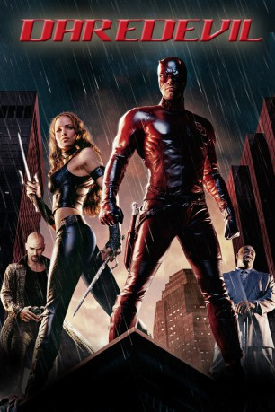

#3339 Daredevil
 
 IMDB-Wertung: 5.3 / 10
IMDB-Wertung: 5.3 / 10  Metascore: 0
Metascore: 0 
Anwalt Matt Murdock hatte keine einfache Kindheit: Zuerst verlor er sein Augenlicht bei einem Unfall mit radioaktiven Chemikalien und später wurde sein Vater von einem Unbekannten ermordet. Doch bei dem Unfall wurden Matts verbleibende Sinne auf übermenschliche Weise geschärft. Nun tritt er für die Gerechtigkeit ein: Tagsüber als Anwalt und nachts als kostümierter Rächer Daredevil, der freigesprochene Kriminelle heimsucht. Sein größer Gegenspieler ist der Gangsterboss Kingpin und Matt kann nicht verhindern, dass seine große Liebe Elektra Natchios in diesen Privatkrieg hineingezogen wird...
Jahr: 2003
Dauer: 133 Minuten
FSK: 16
Land: USA Studio: 20th Century FoxTonspuren: DTS - ,
Untertitel: Deutsch,
Auflösung: 1080p (1920x816) Größe: 9523 MB
Genre: Action, Thriller, Krimi
Regisseur:  Mark Steven Johnson
Mark Steven Johnson
Drehbuch: Dick Clement
Soundtrack:
Darsteller:
 Ben Affleck als Matt Murdock / Daredevil
Ben Affleck als Matt Murdock / Daredevil Jennifer Garner als Elektra Natchios
Jennifer Garner als Elektra Natchios Colin Farrell als Bullseye
Colin Farrell als Bullseye Michael Clarke Duncan als Wilson Fisk / The Kingpin
Michael Clarke Duncan als Wilson Fisk / The Kingpin Jon Favreau als Franklin 'Foggy' Nelson
Jon Favreau als Franklin 'Foggy' Nelson- Scott Terra als Young Matt
- Ellen Pompeo als Karen Page
 Joe Pantoliano als Ben Urich
Joe Pantoliano als Ben Urich Leland Orser als Wesley Owen Welch
Leland Orser als Wesley Owen Welch Lennie Loftin als Nick Manolis
Lennie Loftin als Nick Manolis Erick Avari als Nikolas Natchios
Erick Avari als Nikolas Natchios Derrick O'Connor als Father Everett
Derrick O'Connor als Father Everett Paul Ben-Victor als Jose Quesada
Paul Ben-Victor als Jose Quesada David Keith als Jack Murdock
David Keith als Jack Murdock John Rothman als Quesada Attorney
John Rothman als Quesada Attorney- Josie DiVincenzo als Josie
- Jorge Noa als NY Cop #1
 Pat Crawford Brown als Old Lady on Plane
Pat Crawford Brown als Old Lady on Plane- Luke Strode als Little Boy
 Kevin Smith als Jack Kirby, Forensic Assistant
Kevin Smith als Jack Kirby, Forensic Assistant Stan Lee als Old Man at Crossing
Stan Lee als Old Man at Crossing Greg Collins als Fisk Bodyguard
Greg Collins als Fisk Bodyguard- Robert Iler als Bully #1
 Frank Miller als Man with Pen in Head
Frank Miller als Man with Pen in Head- Coolio als Dante Jackson, Director's Cut
- Dina Rosenmeier als Biker Girl, Director's Cut
 Jude Ciccolella als Robert McKensie, Director's Cut
Jude Ciccolella als Robert McKensie, Director's Cut- Gregg Marc Miller als Dock Supervisor, Director's Cut
- Kevin Spirtas als Prosecutor at Jackson Trial, Director's Cut
- Collin Grant als London Airport Guard #2, Director's Cut
- Adam Blake Boswell als Irish Drunk , uncredited
- David Burrows als Man at the Ball , uncredited
- Carlo Corazon als Gangster at Bar , uncredited
- Michael Duisenberg als Bartender , uncredited
- Claudine Farrell als Girl in Pub / Voice on Answering Machine , uncredited
- André Gordon als Body Guard , uncredited
- Douglas Haase als Party Member , uncredited
 Kane Hodder als Fallon's Bodyguard , uncredited
Kane Hodder als Fallon's Bodyguard , uncredited Ted Hollis als Pedestrian , uncredited
Ted Hollis als Pedestrian , uncredited Mark Margolis als Fallon , uncredited
Mark Margolis als Fallon , uncredited- Rebecca Michael als Dancer at Party , uncredited
- Kelly Nish als Girl on Playground , uncredited
- Kevin Porter als Bodyguard , uncredited
 Tanoai Reed als Pool Hall Thug , uncredited
Tanoai Reed als Pool Hall Thug , uncredited- Sandra Teles als Woman at the Ball , uncredited
- Nancy Wetzel als Kate , uncredited
- Patrick Williams als Tavern Patron , uncredited
- Frankie J. Allison als Abusive Father
- Joe J. Garcia als Meat Packer
- Jim FitzGerald als Ring Announcer
Datei: X:\Comic-Filme\Daredevil (2003, FSK16, 1920x816).mkv seit 15.03.2016
Festplatte: Comicverfilmungen+MusikCD
 Es gibt insgesamt 44 Filme in der Gruppe 'Comic-Filme'
Es gibt insgesamt 44 Filme in der Gruppe 'Comic-Filme'